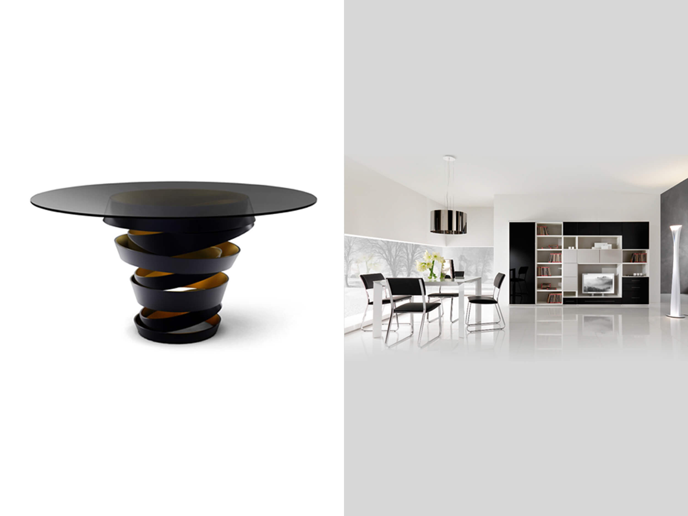

內容
時尚造型桌具
時尚前衛的螺旋造型，以黑色顯現出低調奢華的時尚感，提升整體室內的擺設品味。時尚前衛的螺旋造型，以黑色顯現出低調奢華的時尚感，提升整體室內的擺設品味。時尚前衛的螺旋造型，以黑色顯現出低調奢華的時尚感，提升整體室內的擺設品味。
尺寸：
顏色：
顏色：
即使在潮濕的北部，也不易發霉變形，保養容易，因為材質本身超強的堅固性，結實牢固柚木實木實感好，製作的家具紋理優美，質地均勻，表面細緻滑溜，柚木自身的油脂能夠保護家具的色澤，光亮持久；拋光面透過光合作用氧化作......即使在潮濕的北部，也不易發霉變形，保養容易，因為材質本身超強的堅固性，結實牢固柚木實木實感好，製作的家具紋理優美，質地均勻，表面細緻滑溜，柚木自身的油脂能夠保護家具的色澤，光亮持久；拋光面透過光合作用氧化作......即使在潮濕的北部，也不易發霉變形，保養容易，因為材質本身超強的堅固性，結實牢固柚木實木實感好，製作的家具紋理優美，質地均勻，表面細緻滑溜，柚木自身的油脂能夠保護家具的色澤，光亮持久；拋光面透過光合作用氧化作......
了解更多
價格：NT 29,000
搭配
塗裝